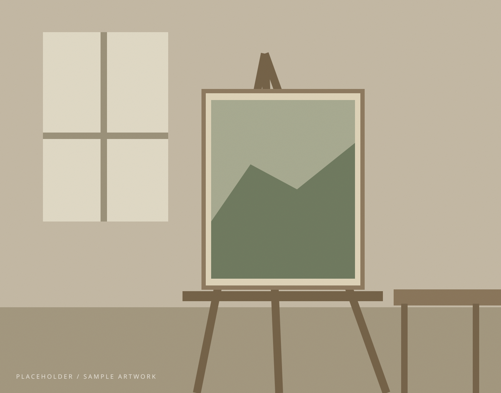

A PERSONAL COLLECTION · 个人作品集
在日常之间，
看见另一种风景。
绘画 / 观察 / 研究
PAINTING AS A WAY OF SEEING
AN ONGOING EXPLORATION
SELECTED WORKS / 01
作品选集
关于光、空间与细微的感受。
以下作品与信息均为示例。
ABOUT THE ARTIST / 02
关于创作，也关于观看。

THE STUDIO / 工作室示意占位图黄先森 · 艺术家简介待填写
让目光慢下来。
在这里介绍你自己：你在哪里生活与创作？你为什么选择绘画？什么样的经验影响了你的观看方式？
这是一段简介占位文字，不代表你的真实经历。你可以从一件具体的作品或一个长期关注的问题开始，让读者逐渐走进你的创作。
创作理念 ARTIST STATEMENT
待填写：请用自己的话描述创作中关注的主题、常用的材料，以及你希望作品带来的感受。
艺术研究 RESEARCH
待填写：可记录材料实验、图像采集、阅读笔记，以及正在探索的系列方向。
展览经历 EXHIBITIONS
待填写。这里没有列出任何虚构的展览。未来可以按“年份 / 展览名称 / 场地 / 城市”添加真实记录。
GET IN TOUCH / 03
让对话，
从这里开始。
欢迎有关作品、展览与创作合作的交流。
联系方式尚未填写。请先在 data.js 中添加
你愿意公开的邮箱与 wechat 地址。
仅填写你希望公开的信息；本网站不收集访客资料。